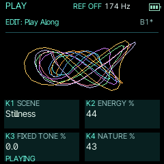
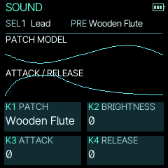
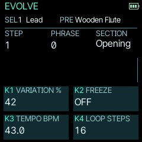
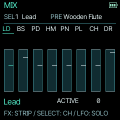
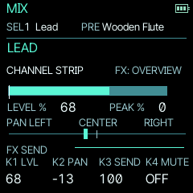
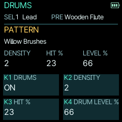
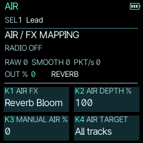
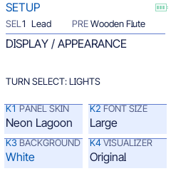

01 / PATCH LIBRARY
Thirty sounds, infinite possibilities.
30 named patches, including warm bass, keys, harp, guitar, flutes, reeds, choirs, pads and six new FM timbres. Edit brightness, attack and release.
A living generative instrument for the FM-1 with 30 original patches, eight evolving musical roles, 19 drum kits, expressive soundscapes and a fresh, beautifully editable interface.

One-press song saving while music plays, pure black or white fullscreen, clearer panels and an eight-track mixer keep creative exploration flowing in v0.6.3.
30 named patches, including warm bass, keys, harp, guitar, flutes, reeds, choirs, pads and six new FM timbres. Edit brightness, attack and release.
Lead, bass, pads, harmony, piano, plucks, choir and drums form evolving parts with variable development pace, Freeze, locks and motif returns.
19 drum kits including four added FM kits. Set density, 0–100% optional-hit probability, level and mix presence.
Independent-ear binaural oscillators, selectable beat differences from 0.5 to 40 Hz, intention tones and optional 432/440 tuning. Headphones recommended.
Evolving stereo birds, forests, and new Florida Night, Twilight Meadow, Crystal Creek and Mountain Rain nature beds.
Redesigned eight-track console with focused channel strips, real peak meters, sends, mute, solo, Auto Level and Auto Gain.
83 indexed on-device parameters, direct SOUND editing destinations, clearer knob values and intuitive navigation.
Two visualizer modes, 13 expressive intention geometries, audio/onset response and immersive fullscreen.
Five panel skins, three AQUORA Sans sizes, black or white backgrounds, four lighting modes, four save banks and experimental AIR FX mapping.
AQUORA is a creative listening and musical instrument, not a medical treatment. Intention and frequency names are artistic listening themes, not claims of established healing effects. AIR sensing is experimental and physical response varies.
Seven authentic 240 × 240 interface screenshots from the accepted v0.6.3 renderer. New mixer and editing screens are shown, not old-version mockups.







AQUORA is an independent creative work built around musical curiosity, movement, and the beauty of patterns in nature.
Ripples, symmetry, interference and crystalline motifs inform the visual language. Masaru Emoto's imagery is a *visual inspiration*, not scientific evidence of water remembering emotion.
THEMES / WAVEFORMS / LIGHTSlow drones, layered acoustic colors, evolving melodic fragments and generative arrangement techniques shape the sonic identity.
THEMES / STILLNESS / MOVEMENTReadable typography, expressive controls and original visual ideas make AQUORA a personal musical world.
INDEPENDENT DESIGN / CREATIVITYNot a video, not a static mockup. The emulator runs the completed AQUORA 0.6.3 FM-1 application compiled to WebAssembly, with live audio and the virtual instrument's knobs, buttons, keys and display.
Audio starts only after you select “Switch on” inside the emulator. Use headphones for stereo binaural listening.
Tap “Switch on” in the embedded emulator, then press PLAY on its virtual panel. For the most room to perform, open the dedicated emulator page.
Explore first, then use the verified installer when you're ready to move to hardware. Historical releases stay available for rollback.
This website uses the officially published v0.6.3 software; hardware performance awaits physical verification.